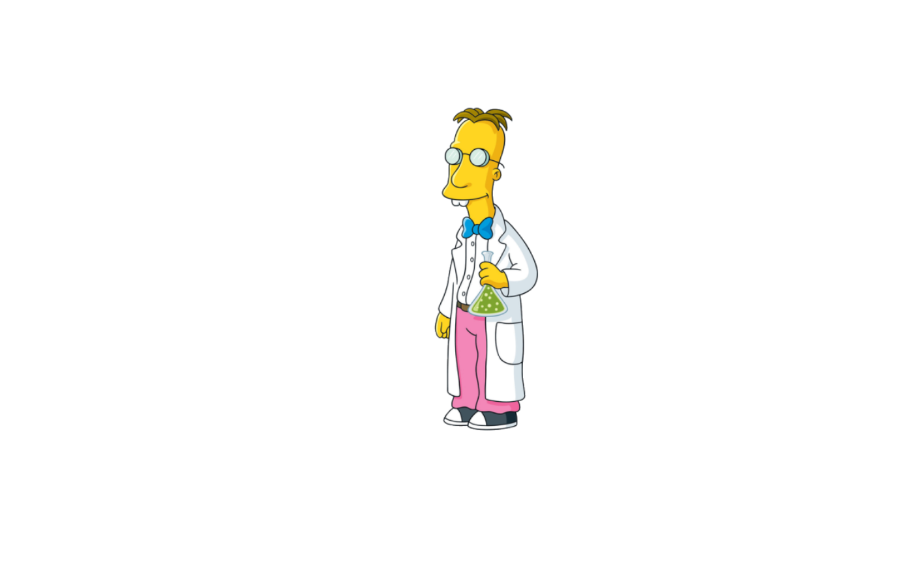

Read, write and join or combine images. All image functions are vectorized, meaning
they operate either on a single frame or a series of frames (e.g. a collage, video,
or animation). Besides paths and URLs, image_read() supports commonly used bitmap
and raster object types.
image_read(path, density = NULL, depth = NULL, strip = FALSE, defines = NULL) image_read_svg(path, width = NULL, height = NULL) image_read_pdf(path, pages = NULL, density = 300, password = "") image_read_video(path, fps = 1, format = "png") image_write( image, path = NULL, format = NULL, quality = NULL, depth = NULL, density = NULL, comment = NULL, flatten = FALSE, defines = NULL, compression = NULL ) image_convert( image, format = NULL, type = NULL, colorspace = NULL, depth = NULL, antialias = NULL, matte = NULL, interlace = NULL ) image_data(image, channels = NULL, frame = 1) image_raster(image, frame = 1, tidy = TRUE) image_display(image, animate = TRUE) image_browse(image, browser = getOption("browser")) image_strip(image) image_blank(width, height, color = "none", pseudo_image = "", defines = NULL) image_destroy(image) image_join(...) image_attributes(image) image_get_artifact(image, artifact = "") demo_image(path)
Arguments
| path | a file, url, or raster object or bitmap array |
|---|---|
| density | resolution to render pdf or svg |
| depth | color depth (either 8 or 16) |
| strip | drop image comments and metadata |
| defines | a named character vector with extra options to control reading.
These are the |
| width | in pixels |
| height | in pixels |
| pages | integer vector with page numbers. Defaults to all pages. |
| password | user password to open protected pdf files |
| fps | how many images to capture per second of video. Set to
|
| format | output format such as |
| image | magick image object returned by |
| quality | number between 0 and 100 for jpeg quality. Defaults to 75. |
| comment | text string added to the image metadata for supported formats |
| flatten | should image be flattened before writing? This also replaces transparency with background color. |
| compression | a string with compression type from compress_types |
| type | string with imagetype
value from image_types for example |
| colorspace | string with a |
| antialias | enable anti-aliasing for text and strokes |
| matte | set to |
| interlace | string with interlace |
| channels | string with image channel(s) for example |
| frame | integer setting which frame to extract from the image |
| tidy | converts raster data to long form for use with geom_raster.
If |
| animate | support animations in the X11 display |
| browser | argument passed to browseURL |
| color | a valid color string such as
|
| pseudo_image | string with pseudo image
specification for example |
| ... | several images or lists of images to be combined |
| artifact | string with name of the artifact to extract, see the image_deskew for an example. |
Details
All standard base vector methods such as [, [[, c(), as.list(),
as.raster(), rev(), length(), and print() can be used to work with magick
image objects. Use the standard img[i] syntax to extract a subset of the frames
from an image. The img[[i]] method is an alias for image_data() which extracts
a single frame as a raw bitmap matrix with pixel values.
For reading svg or pdf it is recommended to use image_read_svg() and image_read_pdf()
if the rsvg and pdftools R packages are available.
These functions provide more rendering options (including rendering of literal svg) and
better quality than built-in svg/pdf rendering delegates from imagemagick itself.
X11 is required for image_display() which is only works on some platforms. A more
portable method is image_browse() which opens the image in a browser. RStudio has
an embedded viewer that does this automatically which is quite nice.
Image objects are automatically released by the garbage collector when they are no longer
reachable. Because the GC only runs once in a while, you can also call image_destroy()
explicitly to release the memory immediately. This is usually only needed if you create
a lot of images in a short period of time, and you might run out of memory.
See also
Other image:
_index_,
analysis,
animation,
attributes(),
color,
composite,
defines,
device,
edges,
effects(),
fx,
geometry,
morphology,
ocr,
options(),
painting,
segmentation,
transform(),
video
Examples
# Download image from the web frink <- image_read("https://jeroen.github.io/images/frink.png") worldcup_frink <- image_fill(frink, "orange", "+100+200", 20) image_write(worldcup_frink, "output.png") # extract raw bitmap array bitmap <- frink[[1]] # replace pixels with #FF69B4 ('hot pink') and convert back to image bitmap[,50:100, 50:100] <- as.raw(c(0xff, 0x69, 0xb4, 0xff)) image_read(bitmap)#> # A tibble: 1 x 7 #> format width height colorspace matte filesize density #> <chr> <int> <int> <chr> <lgl> <int> <chr> #> 1 PNG 220 445 sRGB TRUE 0 72x72# Plot to graphics device via legacy raster format raster <- as.raster(frink) par(ask=FALSE) plot(raster)
# Read bitmap arrays from from other image packages curl::curl_download("https://jeroen.github.io/images/example.webp", "example.webp") if(require(webp)) image_read(webp::read_webp("example.webp"))#>#> # A tibble: 1 x 7 #> format width height colorspace matte filesize density #> <chr> <int> <int> <chr> <lgl> <int> <chr> #> 1 PNG 550 404 sRGB TRUE 0 72x72unlink(c("example.webp", "output.png")) if(require(rsvg)){ tiger <- image_read_svg("http://jeroen.github.io/images/tiger.svg") svgtxt <- '<?xml version="1.0" encoding="UTF-8"?> <svg width="400" height="400" viewBox="0 0 400 400" fill="none"> <circle fill="steelblue" cx="200" cy="200" r="100" /> <circle fill="yellow" cx="200" cy="200" r="90" /> </svg>' circles <- image_read_svg(svgtxt) }#>if(require(pdftools)) image_read_pdf(file.path(R.home('doc'), 'NEWS.pdf'), pages = 1, density = 100)#>#>#> # A tibble: 1 x 7 #> format width height colorspace matte filesize density #> <chr> <int> <int> <chr> <lgl> <int> <chr> #> 1 PNG 850 1100 sRGB TRUE 0 100x100# create a solid canvas image_blank(600, 400, "green")#> # A tibble: 1 x 7 #> format width height colorspace matte filesize density #> <chr> <int> <int> <chr> <lgl> <int> <chr> #> 1 png 600 400 sRGB FALSE 0 72x72image_blank(600, 400, pseudo_image = "radial-gradient:purple-yellow")#> # A tibble: 1 x 7 #> format width height colorspace matte filesize density #> <chr> <int> <int> <chr> <lgl> <int> <chr> #> 1 RADIAL-GRADIENT 600 400 sRGB FALSE 0 72x72image_blank(200, 200, pseudo_image = "gradient:#3498db-#db3a34", defines = c('gradient:direction' = 'east'))#> # A tibble: 1 x 7 #> format width height colorspace matte filesize density #> <chr> <int> <int> <chr> <lgl> <int> <chr> #> 1 GRADIENT 200 200 sRGB FALSE 0 72x72